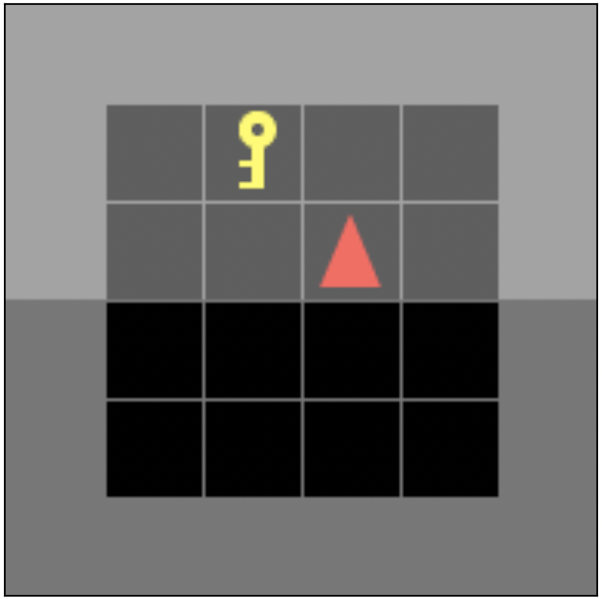
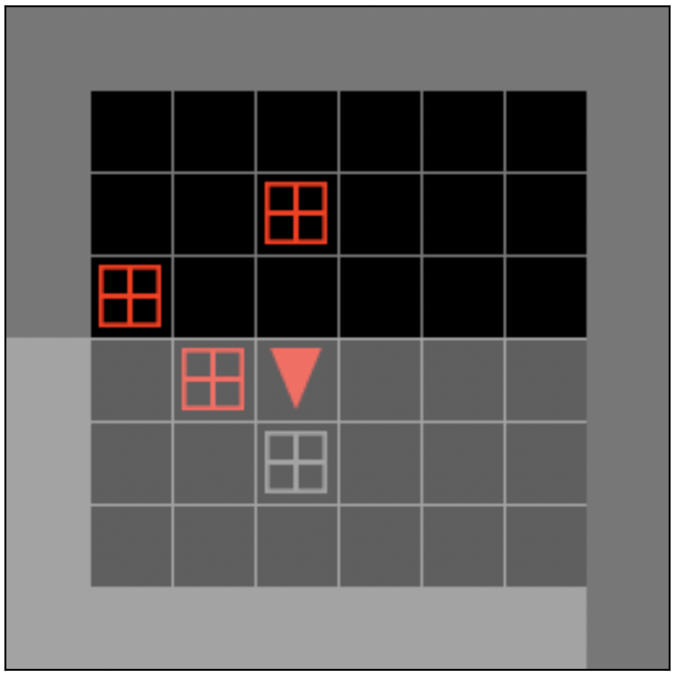
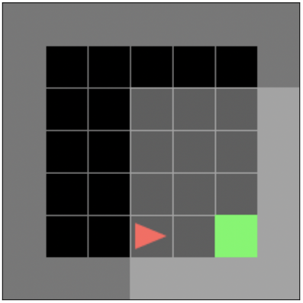
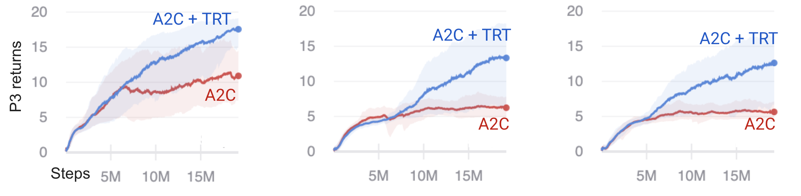
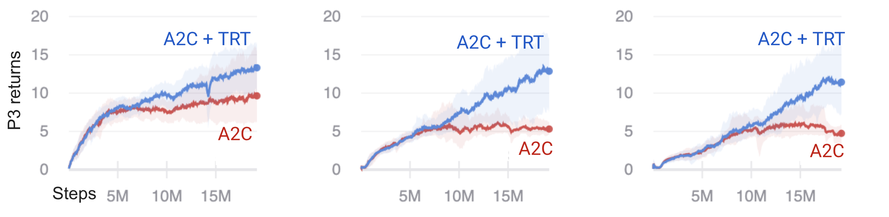
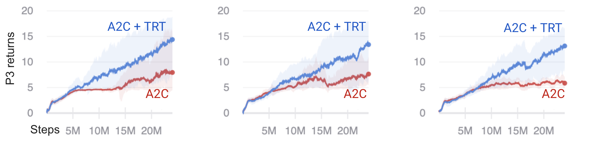
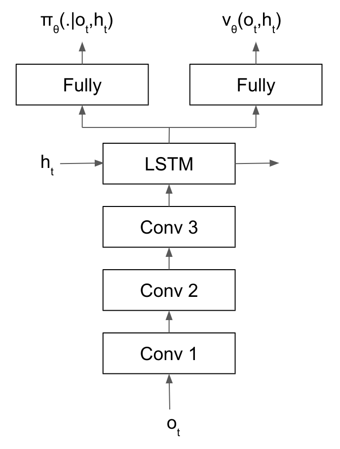
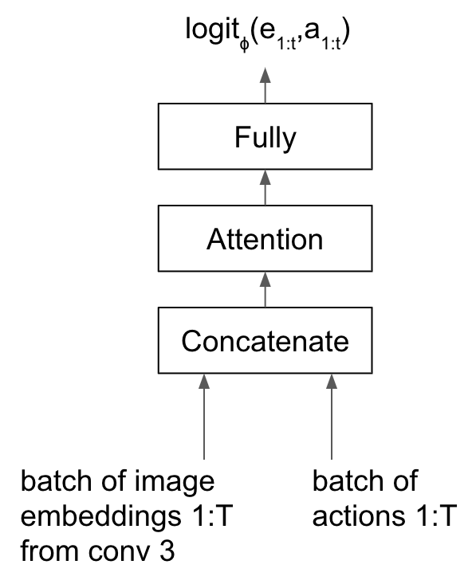
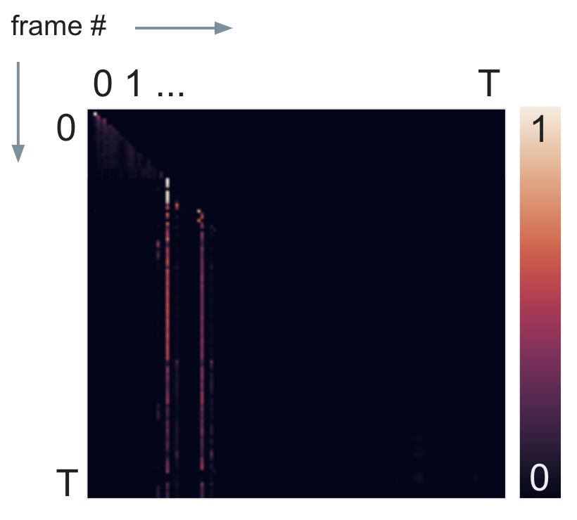
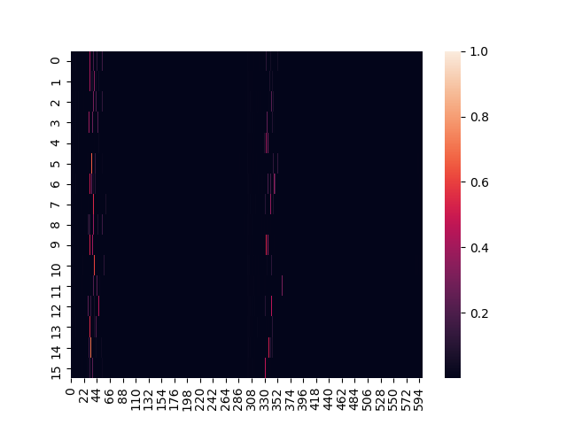

[TOC]
Summary
Standard reinforcement learning algorithms struggle with poor sample efficiency in the presence of sparse rewards with long temporal delays between action and effect. To address the long term credit assignment problem, we build on the work of [1] to use “temporal reward transport” (TRT) to augment the immediate rewards of significant state-action pairs with rewards from the distant future using an attention mechanism to identify candidates for TRT. A series of gridworld experiments show clear improvements in learning when TRT is used in conjunction with a standard advantage actor critic algorithm.
Introduction
Episodic reinforcement learning (RL) models the interaction of an agent with an environment as a Markov Decision Process with a finite number of time steps \(T\). The environment dynamics \(p(s’,r|s, a)\) are modeled as a joint probability distribution over the next state \(s'\) and reward \(r\) picked up along the way given the previous state \(s\) and action \(a\). In general, the agent does not have access to an exact model of the environment.
The agent’s goal is to maximize its cumulative rewards, the discounted returns \(G_t\),
where \(0 \leq \gamma \leq 1\), and \(R_{t}\) is the reward at time \(t\). In episodic RL, the discount factor \(\gamma\) is often used to account for uncertainty in the future, to favor rewards now vs. later, and as a variance reduction technique, e.g. in policy gradient methods [2, 3].
Using a discount factor \(\gamma < 1\) introduces a timescale by exponentially suppressing rewards in the future by \(\exp(-n/\tau_{\gamma})\). The number of timesteps it takes for a reward to decay by \(1/e\) is \(\tau_{\gamma} = 1/(1-\gamma)\), in units of timesteps, which follows from solving for \(n\) after setting the left and right sides of (\ref{discount-timescale}) to be equal
The state value function \(v_{\pi}(s)\) is the expected return when starting in state \(s\), following policy \(\pi(a|s) := p(a|s)\), a function of the current state.
Policy gradient algorithms improve the policy by using gradient ascent along the gradient of the value function.
where \(\tau \sim \pi\) describes the agent’s trajectory following policy \(\pi\) beginning from state \(s_0\), and \(\mathcal{R}(\tau)\) is a function of the rewards obtained along the trajectory. In practice, policy gradients approximate the expected value in (\ref{policy-gradient}) by sampling, which results in very high variance estimates of the gradient.
Common techniques to reduce the variance of the estimated policy gradient include [2]
- only assigning credit for rewards (the “rewards-to-go”) accumulated after a particular action was taken instead of crediting the action for all rewards from the trajectory.
- subtracting a baseline from the rewards weight that is independent of action. Oftentimes, this baseline is the value function in (\ref{state-value}).
- using a large batch size.
- using the value function (\ref{state-value}) to bootstrap the returns some number of steps into the future instead of using the full raw discounted return, giving rise to a class of algorithms called actor critics that learn a policy and value function in parallel. For example, one-step bootstrapping would approximate the discounted returns in (\ref{return}) as
where \(V(S_{t+1})\) is the estimate of the value of state \(S_{t+1}\) (\ref{state-value}).
All of these techniques typically make use of discounting, so an action receives little credit for rewards that happen more than \(\tau_{\gamma}\) timesteps in the future, making it challenging for standard reinforcement learning algorithms to learn effective policies in situations where action and effect are separated by long temporal delays.
Results
Temporal reward transport
We use temporal reward transport (or TRT), inspired directly by the Temporal Value Transport algorithm from [1], to mitigate the loss of signal from discounting by splicing temporally delayed future rewards to the immediate rewards following an action that the TRT algorithm determines should receive credit.
To assign credit to a specific observation-action pair, we use an attention layer in a neural network binary classifier. The classifier predicts whether the undiscounted returns for an episode are below or above a certain threshold. If a particular observation and its associated action are highly attended to for the classification problem, then that triggers the splicing of future rewards in the episode to that particular observation-action pair.
Model training is divided into two parts:
- Experience collection using the current policy in an advantage actor critic (A2C) model.
- Parameter updates for the A2C model and binary classifier.
TRT happens between step 1 and 2; it plays no role in experience collection, but modifies the collected rewards through the splicing mechanism, thereby affecting the advantage and, consequently, the policy gradient in (\ref{policy-gradient}).
Environment for experiments
We created a gym gridworld environment to specifically study long term credit assignment. The environment is a simplified version of the 3-d DeepMind Lab experiments laid out in [1]. As in [1], we structure the environment to comprise three phases. In the first phase, the agent must take an action that yields no immediate reward. In the second phase, the agent engages with distractions that yield immediate rewards. In the final phase, the agent can acquire a distal reward, depending on the action it took in phase 1.
Concretely, the gridworld environment consists of:
(1) Empty grid with key: agent can pick up the key but receives no immediate reward for picking it up.

(2) Distractor phase: Agent engages with distractors, gifts that yield immediate rewards.

(3) Delayed reward phase: Agent should move to a green goal grid cell. If the agent is carrying the key when it reaches the goal, it is rewarded extra points.

The agent remains in each phase for a fixed period of time, regardless of how quickly it finishes the intermediate task, and then teleports to the next phase. At the end of each episode, the environment resets with a different random seed that randomizes the placement of the key in phase 1 and distractor objects in phase 2.
Experiments
In all experiments, we fix the time spent in phase 1 and phase 3, the number of distractor gifts in phase 2, as well as the distal reward in phase 3. In phase 3, the agent receives 5 points for reaching the goal without a key and 20 points for reaching the goal carrying a key (with a small penalty proportional to step count to encourage moving quickly to the goal).
Our evaluation metric for each experiment is the the distal reward obtained in phase 3, which focuses on whether the agent learns to pick up the key in phase 1 in order to acquire the distal reward, although we verify that the agent is also learning to open the gifts in phase 2 by plotting the overall returns (see “Data and code availability” section).
Each experiment varies a particular parameter in the second phase, namely, the time delay, distractor reward size, and distractor reward variance, and compares the performance of the baseline A2C algorithm with A2C supplemented with TRT (A2C+TRT).
Time delay in distractor phase
We vary the time spent in the distractor phase, \(T_2\), as a multiple of the discount factor timescale. We used a discount factor of \(\gamma=0.99\), which corresponds to a timescale of ~100 steps according to (\ref{discount-timescale}). We ran experiments for \(T_2 = (0, 0.5, 1, 2) * \tau_{\gamma}\). The distractor reward is 3 points per gift.

Fig 1. Returns in phase 3 for time delays in phase 2 of 0.5\(\tau_{\gamma}\), \(\tau_{\gamma}\), and 2\(\tau_{\gamma}\).
As the environment becomes more challenging from left to right with increasing time delay, we see that A2C plateaus around 5 points in phase 3, corresponding to reaching the goal without the key, whereas A2C+TRT increasingly learns to pick up the key over the training period.
Distractor reward size
We vary the size of the distractor rewards, 4 gifts for the agent to toggle open, in phase 2. We run experiments for a reward of 0, 1, 5, and 8, resulting in maximum possible rewards in phase 2 of 0, 4, 20, and 32.
In comparison, the maximum possible reward in phase 3 is 20.

Fig 2. Returns in phase 3 for distractor rewards of size 0, 5, and 8.
Like the time delay experiments, we see that A2C+TRT shows progress learning to pick up the key, whereas A2C does not over the training period with increasing distractor sizes.
Distractor reward variance
We fix the mean reward size of the gifts in phase 2 at 5, but change the variance of the rewards by drawing each reward from a uniform distribution centered at 5, with minimum and maximum ranges of [5, 5], [3, 7], and [0, 10], corresponding to variances of 0, 1.33, and 8.33, respectively.

Fig 3. Returns in phase 3 for distractor reward variance of size 0, 1.33, and 8.33.
The signal-to-noise ratio of the policy gradient, defined as the ratio of the squared magnitude of the expected gradient to the variance of the gradient estimate, was shown to be approximately inversely proportional to the variance of the distractor rewards in phase 2 in [1] for \(\gamma = 1\). The poor performance of A2C in the highest variance (low signal-to-noise ratio) case is consistent with this observation, with a small standard deviation in performance around the plateau value of 5 compared to the experiments on time delay and distractor reward size.
Discussion
Like temporal value transport introduced in [1], TRT is a heuristic. Nevertheless, coupling this heuristic with A2C has been shown to improve performance on several tasks characterized by delayed rewards that are a challenge for standard deep RL.
Our contribution is a simplified, modular implementation of core ideas in [1], namely, splicing additional rewards from the distant future to state-action pairs identified as significant through a self-attention mechanism. Unlike [1], we implement the self-attention mechanism in a completely separate model and splice the rewards-to-go instead of an estimated value. In addition to the modularity that comes splitting out the attention mechanism for TRT into a separate model, another advantage of decoupling the models is that we can increase the learning rate of the classifier without destabilizing the learning of the main actor critic model if the classification problem is comparatively easy.
Related work
Other works also draw on the idea of using hindsight to reduce the variance estimates of the policy gradient, and hence increase sample efficiency. “Hindsight credit assignment” proposed in [7] similarly learns discriminative models in hindsight that give rise to a modified form of the value function, evaluated using tabular models in a few toy environments (not focused specifically on the long term credit assignment problem). RUDDER [8] is more similar in spirit to [1] and TRT in the focus on redistributing rewards to significant state-action pairs, but identified using saliency analysis on an LSTM instead of an attention mechanism.
Future work
The robustness of the TRT algorithm should be further assessed on a wider variety of environments, including e.g. Atari Bowling, which is another environment with a delayed reward task used for evaluations by [1] and [8]. It remains to be seen whether the attention mechanism and TRT can handle more complex scenarios, in particular scenarios where a sequence of actions must be taken. Just as it is difficult to extract interpretable features from a linear model in the presence of multicollinearity, it is possible that the attention-based classifier may encounter similar problems identifying important state-action pairs when a sequence of actions is required, as our model has no mechanism for causal reasoning.
Although our experiments only evaluated TRT on A2C, coupling it with any policy gradient method based on sampling action space should yield similar benefits, which could be straightforwardly tested with our modular implementation.
A benefit of using self-attention is the temporal granularity over an LSTM. However, a downside is that our approach relies on having the full context of the episode for the attention mechanism ([1] similarly relies on full episodes), in contrast to other methods that can handle commonly used truncation windows with a bootstrapped final value for non-terminal states. Holding full episodes in memory can become untenable for very long episodes, but we have not yet worked out a way to handle this situation in the current setup.
Our first pass implementation transported the raw rewards-to-go instead of the value estimate used in [1], but it is unclear whether transporting the rewards-to-go (essentially re-introducing a portion of the undiscounted Monte Carlo returns) for a subset of important state-action pairs provides a strong enough signal to outweigh the advantages of using a boostrapped estimate intended for variance reduction; the answer may depend on the particular task/environment and is of course contingent on the quality of the value estimate.
The classifier model itself has a lot of room for experimentation. The idea of using a classifier was motivated by a wish to easily extract state-action pairs with high returns from the attention layer, although we have yet to explore whether this provides a clear benefit over a regression model like [1].
The binary classifier is trained to predict whether the rewards-to-go of each subsequence of an episode exceeds a moving average of maximum returns. On the one hand, this is less intuitive than only making the prediction for undiscounted returns of the full episode and introduces highly non-iid inputs for the classifier, which can make make training less stable. On the other hand, one can interpret the current format as a form of data augmentation that results in more instances of the positive class (high return episodes) that benefits the classifier.
If the classifier were modified to only make a single prediction per episode, it may be necessary to create a buffer of recent experiences to shift the distribution of data towards more positive samples for the classifier to draw from in addition to episodes generated from the most recent policy (with the untested assumption that the classifier would be less sensitive to training on such off-policy data than the main actor critic model while benefiting from the higher incidence of the positive class).
Finally, the TRT algorithm introduces additional hyperparameters that could benefit from additional tuning, including the constant factor multiplying the transported rewards and the attention score threshold to trigger TRT.
Methods
Environment
The agent receives a partial observation of the environment, the 7x7 grid in front of it, with each grid cell encoding 3 input values, resulting in 7x7x3 values total (not pixels).
The gridworld environment supports 7 actions: left, right, forward, pickup, drop, toggle, done.
The environment consists of three phases:
- Phase 1 “key”: 6x6 grid cells, time spent = 30 steps
- Phase 2 “gifts”: 10x10 grid cells, time spent = 50 steps (except for the time delay experiment, which varies the time spent)
- Phase 3 “goal”: 7x7 grid cells, time spent = 70.
If the agent picks up the key in phase 1, it is initialized carrying the key in phase 3, but not phase 2. The carrying state is visible to the agent in phase 1 and 3. Except for the time delay experiment, each episode is 150 timesteps.
Distractor rewards in phase 2:
- 4 distractor objects, gifts that the agent can toggle open, that yield immediate rewards
- Each opened gift yields a mean reward of 3 points (except in the reward size experiment)
- Gift rewards have a variance of 0 (except in the reward variance experiment)
Distal rewards in phase 3:
5 points for reaching the goal without a key and 20 points for reaching the goal carrying a key. There is a small penalty of -0.9 * step_count / max_steps=70 to encourage moving quickly to the goal. For convenience of parallelizing experience collection of complete episodes, the time in the final phase is fixed, even if the agent finishes the task of navigating to the green goal earlier. Furthermore, for convenience of tracking rewards acquired in the final phase, the agent only receives the reward for task completion in the last step of the final phase, even though this last reward reflects the time and state in which the agent initially reached the goal.
Note, unlike the Reconstructive Memory Agent in [1], our agent does not have the ability to encode and reconstruct memories, and our environment is not set up to test for that ability.
Agent model
The agent’s model is an actor critic consisting of 3 components: an image encoder convolutional net (CNN), an recurrent neural net layer providing memory, and dual heads outputting the policy and value. We used an open-sourced model that has been extensively tested for gym-minigrid environments from [4].

Fig 4. A2C model with three convolutional layers, LSTM, and dual policy and value function heads.
The image encoder consists of three convolutional layers interleaved with rectified linear (ReLU) activation functions. A max pooling layer also immediately precedes the second convolutional layer.
The encoded image is followed by a single Long Short Term Memory (LSTM) layer.
The LSTM outputs a hidden state which feeds into the dual heads of the actor critic. Both heads consist of two fully connected linear layers sandwiching a tanh activation layer. The output of the actor, the policy, is the same size as the action space in the environment. The output of the critic is a scalar corresponding to the estimated value.
Binary classifier with self-attention
The inputs to the binary classifier are the sequence of image embeddings output by the actor critic model’s CNN (not the hidden state of the LSTM) and one-hot encoded actions taken in that state.
The action passes through a linear layer with 32 hidden units before concatenation with the image embedding.
Next, the concatenated vector \(\mathbf{x}_i\) undergoes three separate linear transformations, playing the role of “query”, “key” and “value” (see [6] for an excellent explanation upon which we based our implementation of attention). Each transformation projects the vector to a space of size equal to the length of the episode.
The self-attention layer outputs a weighted average over the value vectors, where the weight is not a parameter of the neural net, but the dot product of the query and key vectors.
The dot product in (\ref{self-attention}) is between embeddings of different frames in an episode. We apply masking to the weight matrix before the softmax in (\ref{self-attention}) to ensure that observations from different episodes do not pay attention to each other, in addition to future masking (observations can only attend past observations in the same episode).
The output of the attention layer then passes through a fully connected layer with 64 hidden units, followed by a ReLU activation, and the final output is a scalar, the logit predicting whether the rewards-to-go from a given observation are below or above a threshold.
The threshold itself is a moving average over the maximum undiscounted returns seen across network updates, where the averaging window is a hyperparameter that should balance updating the threshold in response to higher returns due to an improving policy (in general, increasing, although monotonicity is not enforced) with not increasing so quickly such that there are too few episodes in the positive (high returns) class in a given batch of collected experiences.

Fig 5. Binary classifier model with attention, accepting sequences as input.
Temporal reward transport
After collecting a batch of experiences by following the A2C model’s policy, we calculate the attention scores \(w_{ij}\) from (\ref{self-attention}) using observations from the full episode as context.

Fig 6. Attention scores for a single episode with future masking (of the upper right triangle). The bright vertical stripes correspond to two highly attended state-action pairs.
We calculate the importance, defined as the average weight of observation \(i\), ignoring masked regions in the attention matrix as

Fig 7. Importances for a batch of collected experiences (16 processes x 600 frames = 9600 frames), with frame or step number on the horizontal axis and process number on the vertical axis.
Observations with an importance score above a threshold (between 0 and 1) hyperparameter are eligible for TRT. After identifying the candidates for TRT, we add the distal rewards-to-go, weighted by the importance and another hyperparameter for tuning the impact of the TRT rewards \(\alpha_{TRT}\) to the original reward \(r_i\) obtained during experience collection:
We define the distal rewards-to-go in (\ref{trt}) as the total undiscounted returns from observation \(i\), excluding rewards accumulated in an immediate time window of size equal to the discount factor timescale \(\tau_\gamma\) defined in (\ref{discount-timescale}). This temporal exclusion zone helps prevent overcounting rewards.
We calculate the advantage after TRT using the generalized advantage estimation algorithm GAE-\(\lambda\) [3] with \(\lambda=0.95\), which, analogous to TD-\(\lambda\) [2], calculates the advantage from an exponentially weighted average over 1- to n-step bootstrapped estimates of the \(Q\) value. One of the benefits of using GAE-\(\lambda\) is the spillover effect that enables the TRT-reinforced rewards to directly affect neighboring state-action pairs in addition to the triggering state-action pair.
Training
For experience collection, we used 16 parallel processes, with 600 frames collected per process for a batch size of 9600 frames between parameter updates.
The A2C model loss per time step is
where
and \(o_t\) and \(h_t\) are the observation and hidden state from the LSTM at time \(t\), respectively. We accumulate the losses defined in (\ref{a2c-loss}) by iterating over batches of consecutive time steps equal to the size of the LSTM memory of 10, i.e. truncated backpropagation in time for 10 timesteps.
The classifier with attention has a binary cross entropy loss, where the contribution to the loss from positive examples is weighted by a factor of 2.
We clip both gradient norms according to a hyperparameter \(\text{max_grad_norm}=0.5\), and we optimize both models using RMSprop with learning rates of 0.01, RMSprop \(\alpha=0.99\), and RMSprop \(\epsilon=1e^{-8}\).
Data and code availability
Environment
Code for the components of the 3 phase environment is in our fork of gym-minigrid.
The base environment for running the experiments is defined in https://github.com/frangipane/rl-credit/. Each experiment script subclasses that base environment, varying some parameter in the distractor phase.
Experiments
The parameters and results of the experiments are documented in the following publicly available reports on Weights and Biases:
Code for running the experiments is at https://github.com/frangipane/rl-credit in the examples/ submodule.
Acknowledgements
Thank you to OpenAI, my OpenAI mentor J. Tworek, Microsoft for the cloud computing credits, Square for supporting my participation in the program, and my 2020 cohort of Scholars: A. Carrera, P. Mishkin, K. Ndousse, J. Orbay, A. Power (especially for the tip about future masking in transformers), and K. Slama.
References
[1] Hung C, Lillicrap T, Abramson J, et al. 2019. Optimizing agent behavior over long time scales by transporting value. Nat Commun 10, 5223.
[2] Sutton R, Barto A. 2018. Reinforcement Learning: An Introduction (2nd Edition). Cambridge (MA): MIT Press.
[3] Schulman J, Moritz P, Levine S, et al. 2016. High-Dimensional Continuous Control Using Generalized Advantage Estimation. ICLR.
[4] Willems L. RL Starter Files and Torch AC. GitHub.
[5] Chevalier-Boisvert M, Willems L, Pal S. 2018. Minimalistic Gridworld Environment for OpenAI Gym. GitHub.
[6] Bloem P. 2019. Transformers from Scratch [blog]. [accessed 2020 May 1]. http://www.peterbloem.nl/blog/transformers.
[7] Harutyunyan A, Dabney W, Mesnard T. 2019. Hindsight Credit Assignment. Advances in Neural Information Processing Systems 32: 12488—12497.
[8] Arjona-Medina J, Gillhofer M, Widrich M, et al. 2019. RUDDER: Return Decomposition for Delayed Rewards. Advances in Neural Information Processing Systems 32: 13566—13577.
 Cathy Yeh got a PhD at UC Santa Barbara studying soft-matter/polymer physics. After stints in a translational modeling group at Pfizer in San Diego, Driver (a no longer extant startup trying to match cancer patients to clinical trials) in San Francisco, and Square, she is currently participating in the OpenAI Scholars program.
Cathy Yeh got a PhD at UC Santa Barbara studying soft-matter/polymer physics. After stints in a translational modeling group at Pfizer in San Diego, Driver (a no longer extant startup trying to match cancer patients to clinical trials) in San Francisco, and Square, she is currently participating in the OpenAI Scholars program.
Comments